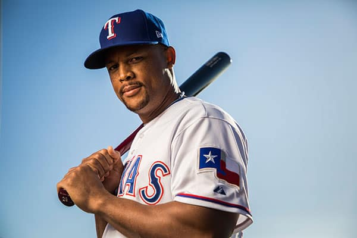
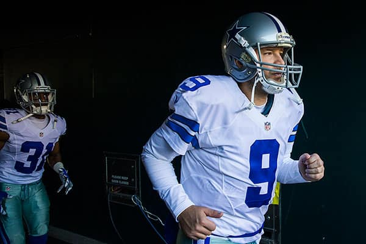
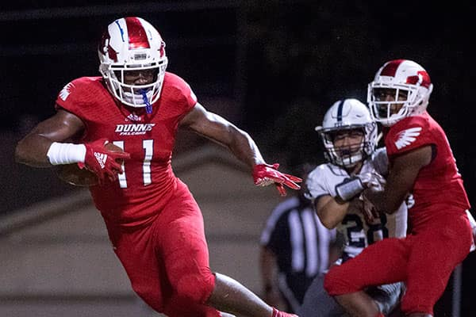

Swish 41
Twenty-one years, 26,376 shots. Tour every dunk, layup, 3-pointer and, of course, fadeaway jumper that make up Dirk Nowitzki’s career
Editor’s note: This story was updated April 10, 2019, after the Mavericks’ 105-94 loss against the San Antonio Spurs. Nowitzki scored 20 points on 8-of-21 shooting.
On Dec. 13, Dirk Nowitzki, the face of the Dallas Mavericks for the past 21 years, returned from offseason ankle surgery to play for the first time in what is likely to be his final season.
Nowitzki has become the embodiment of the franchise over a career that includes more than 26,000 shot attempts, leading the team to two NBA Finals — including the franchise’s first championship in 2011 — and collecting NBA MVP and Finals MVP awards along the way.
Nowitzki has made the most of his time on the court. Few could have envisioned the lanky German with the goofy haircut introduced to Mavericks fans in 1998 would go on to become the sixth highest scoring player in NBA history.
And while Father Time has caught up with the Big German, slowing his pace up and down the court and diminishing his minutes, it hasn’t tarnished what has been a legendary career in not only Dallas, but the entire NBA. Take some time to explore his career below — for instance: two decades-worth of battles vs. the Spurs or his 2011 title run — or keep scrolling to see some of the milestones that define Nowitzki’s legacy.
Nowitzki is .
: from against the .
Source: NBA.com. Hat tip: If you’re interested in taking a tour of another NBA great, have a look at the inspiration for this piece by the Los Angeles Times.
Looking for more great sports reporting?
If you enjoy in-depth reporting on the Dallas Mavericks or other North Texas sports teams, please consider supporting dallasnews.com by subscribing today.
Subscribe nowFollow John Hancock on Twitter at @Hancock_JohnD.
Read more from The Dallas Morning News
Adrian Beltre’s march to 3,000
The Rangers third baseman is finally part of baseball’s elite club of hitters. See how he got there.
Tony Romo’s career, visualized
He holds the franchise record for passing yards and touchdowns. See the result of every one of his passes.
SportsDay’s top recruits
North Texas is a hotbed of college football recruiting. See which players make up our Top 100.